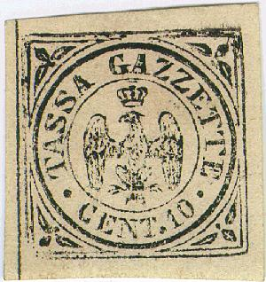
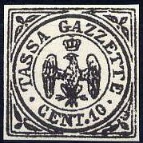
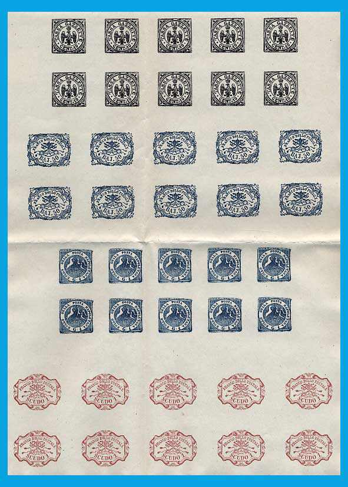
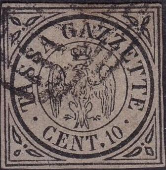
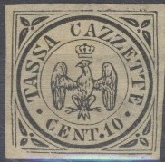
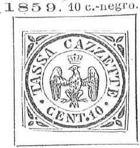
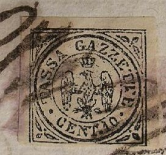
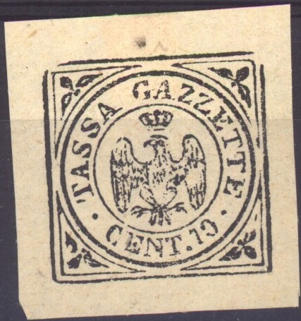
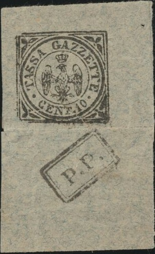

{kind=link}

(Images obtained thanks to Lorenzo)
Return To Catalogue - Modena (Italy) 1852 issue - Italy
Note: on my website many of the
pictures can not be seen! They are of course present in the
catalogue;
contact me if you want to purchase the catalogue.

(Images obtained thanks to Lorenzo)


10 c black
These stamps were printed manually in sheets of 240 stamps. Horizontal or vertical guidlines were drawn first before the stamps were printed.
Value of the stamps |
|||
vc = very common c = common * = not so common ** = uncommon |
*** = very uncommon R = rare RR = very rare RRR = extremely rare |
||
| Value | Unused | Used | Remarks |
| 10 c | RR | RRR | |
A forgery was already described in 'The Stamp Collector's Magazine' in 1864 (1st October, page 155).
Examples:



The above forgeries seem to be a relatively modern product. It is often offered from Italy. Note the relatively crude execution, the breaks and flaws seem to be constant for each individual forgery. Often this forgery has very large margins. Click here for more information on these modern Italian States forgeries

In the genuine stamps, a small horizontal dash can be found, just above the crown, this dash is missing in the next forgeries:



No dash above crown. The crown is also not symmetric (it is
slanting at the top).


Forgeries with the crown empty


Forgeries with the tail of the eagle too pointed.



A more convincing forgery.
I've seen some forgeries of these stamps on (genuine?) old documents. Examples:

For more of these Italy States and Austrian forgeries on old documents, made by the same forger, click here.



Highly dubious stamps. Probably modern reproductions pasted on
old newspapers. The two above stamps have the same defects.

Another highly dubious stamp with a different eagle design.
Sperati made a forgery of this stamp. This Sperati forgery is rather deceptive, but the forgery is lithographed.
Sperati die proof of this stamp.
Fournier forgery: In a 'Fournier Album' ('Pages Reservees aux Experts'), I have seen a Fournier forgery of this stamp with the following forged cancel "MODENA 15 JUN 55":
Forged Fournier cancel "MODENA 15 JUN 55" in a single
circle, reduced size, taken from a Fournier Album.

{kind=link}
{kind=link}